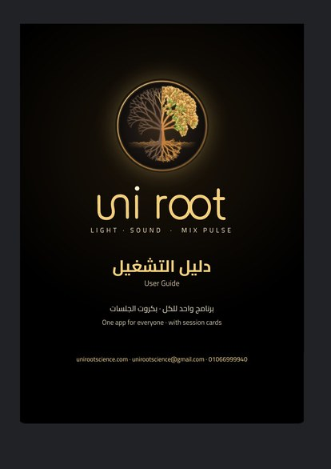

User guide & manual · PDFدليل المستخدم والتشغيل · PDF
Step by step, with pictures from the app.خطوة بخطوة، بصور من التطبيق.

The user guide & manual and the intro videos, to read and watch on this page. To request a file, contact uni root.دليل المستخدم والتشغيل والفيديوهات التعريفية، للقراءة والمشاهدة على الصفحة. لطلب ملف تواصل مع uni root.

Step by step, with pictures from the app.خطوة بخطوة، بصور من التطبيق.

Step by step, with pictures from the app.خطوة بخطوة، بصور من التطبيق.
The same steps, in three minutes.نفس الخطوات في ثلاث دقائق.
The same steps, in three minutes.نفس الخطوات في ثلاث دقائق.
Light and sound, one timing.ضوء وصوت… في توقيت واحد.
Light and sound, one timing.ضوء وصوت… في توقيت واحد.
The universe does not count. It arranges.الكون لا يعدّ… الكون يرتّب.
The universe does not count. It arranges.الكون لا يعدّ… الكون يرتّب.
The body as one system.الجسم كنظامٍ واحد.
The body as one system.الجسم كنظامٍ واحد.
Rhythm, harmony between cells, and two open questions.الإيقاع، وتناغم الخلايا، وسؤالان مفتوحان.
Rhythm, harmony between cells, and two open questions.الإيقاع، وتناغم الخلايا، وسؤالان مفتوحان.
A full session on the MASTER screen, from start to the end.جلسة كاملة على شاشة الـ MASTER، من البداية للنهاية.